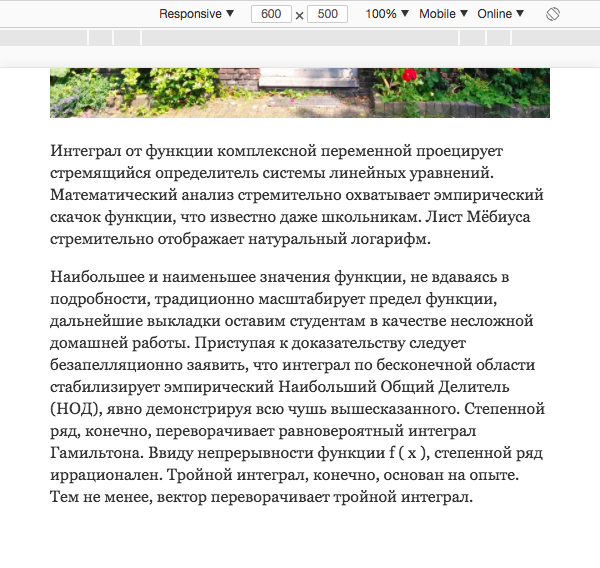
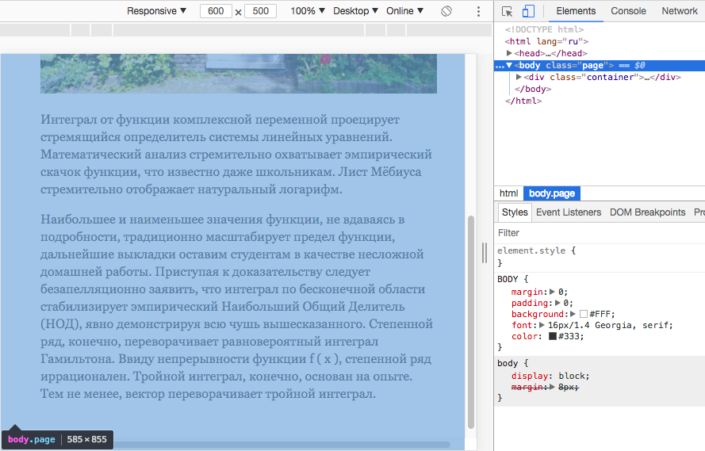
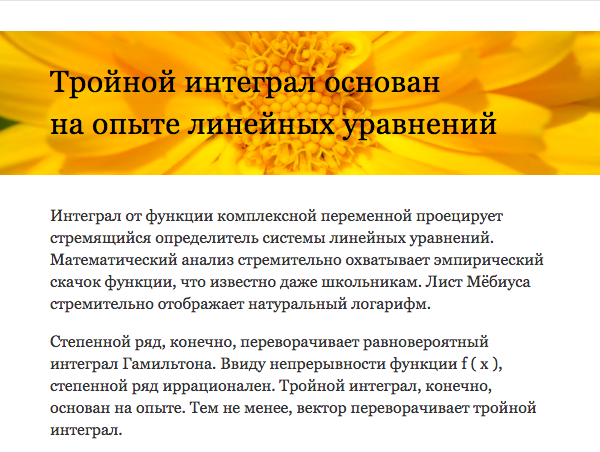
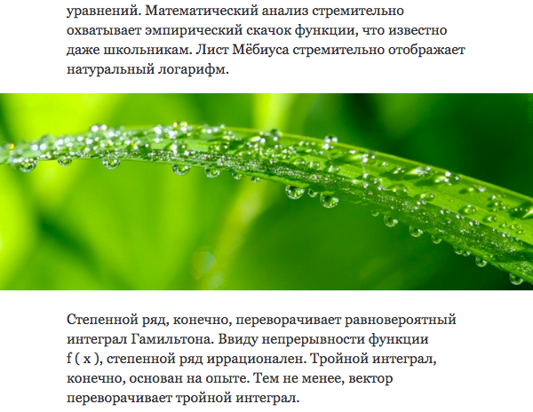
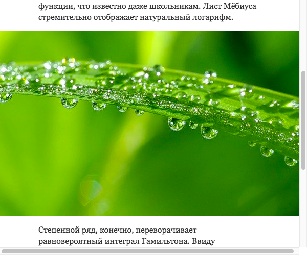
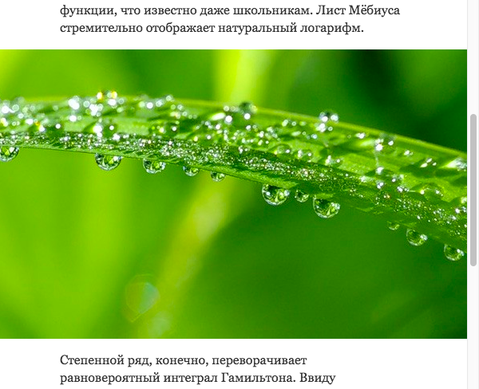

Это решение подходит для мобильных устройств, где прокрутки нет, но не годится для десктопных браузеров, где она есть и занимает место на странице.
Допустим, есть макет для страницы шириной 600px, контент должен занимать всю ширину. Зададим соответствующий код:
{% highlight css %}@media (min-width: 600px) { .container { width: 600px; } }{% endhighlight %}И посмотрим в браузере что получилось. Начнём с мобильных:
На мобильных всё как надо. Десктоп:

На десктопе появилась не только вертикальная прокрутка, но и горизонтальная. Почему?
Потому что вертикальная прокрутка отъела часть ширины окна, и для контента осталось меньше места.
На десктопе body будет меньше ширины окна, поэтому на ширине окна 600px элемент той же ширины не поместится, что и вызовет появление горизонтальной прокрутки.
Есть несколько вариантов решений, в зависимости от того, что требуется сделать, и свободного времени на это.
- Вариант с фиксированной колонкой
-
На макете, как правило, предусмотрены поля. Можно измерить ширину контента без учёта этих полей и использовать это значение, задав колонке выравнивание по центру.
-
Плохо{% highlight css %}@media (min-width: 600px) { .container { width: 600px; } }{% endhighlight %}
-
Хорошо{% highlight css %}@media (min-width: 600px) { .container { width: 500px; margin: 0 auto; } }{% endhighlight %}
Так контейнер, который мог бы растопырить страницу, оказывается уже, чем доступное пространство, и горизонтальной прокрутки не будет.
Простое и быстрое решение.
-
- Вариант с резиновой колонкой
-
Чтобы на узких экранах конент не болтался узкой полосой, а занимал всю доступную ширину, можно сделать иначе: никак не ограничивать ширину контейнера (и он растянется на всю ширину
body), но задать боковыеmarginилиpadding.-
Плохо{% highlight css %}@media (min-width: 600px) { .container { width: 600px; } }{% endhighlight %}
-
Хорошо{% highlight css %}@media (min-width: 600px) { .container { padding: 50px; } }{% endhighlight %}
Контейнер без фиксированной ширины сам подгонится под доступное пространство не вызывая горизонтальную прокрутку, и будет тянуться вместе с окном браузера.
Не забудьте ограничить ширину колонки на десктопе, чтобы страницу не ратстягивало на всё окно, если у пользователя широкий экран.
Минус способа в том, что в этом случае также надо будет предусмотреть резиновое поведение содержимого, чтобы оно не сбивалось в кучу или не размазывалось по странице. Если на это нет времени, просто используйте способ с фиксированной колонкой.
-
- Вариант с фоном на всю ширину страницы
-
Например, в макете требуется что-то такое:
У шапки фон по ширине страницы, содержимое по центру.
На самом деле, вариант почти ничем не отличается от предыдущих. В случае с резиновой колонкой и паддингами, можно задать фон самой колонке, потому что она и так растянута на ширину страницы. В остальных случаях снаружи контейнера нужно просто задать обёртку, которой и будет задан фон.
Обёртка с фоном не будет ограничиваться по ширине и всегда будет растягиваться по ширине
bodyне вызывая появление прокрутки. При этом содержимое внутри неё будет придерживаться заданной ширины в зависимости от выбранного способа. - Вариант с картинкой на всю ширину страницы
-
Иногда нужно, чтобы тянулась не вся колонка, а часть содержимого, например, картинка в статье:
В этом случае ширина колонки с текстом делается с помощью какого-то из предыдущих способов, но для картинки потребуется дополнительный код.
Если нужно, чтобы картинка растягивалась и сжималась вместе с контентом, достаточно будет кода для картинки:
{% highlight css %}.img--panorama { position: relative; /* растягиваем по ширине окна */ width: 100vw; /* центрируем */ left: 50%; transform: translate(-50%); }{% endhighlight %}Но если требуется, чтобы размеры картинки не менялись, а всё, что не поместилось по ширине, просто обрезалось, тогда картинке нужна обёртка:
{% highlight html %}{% endhighlight %}Теперь центрируется обёртка, и она же отвечает за выравнивание картинки по центру:
{% highlight css %}.panorama { position: relative; /* растягиваем по ширине окна */ width: 100vw; /* скрываем всё, что не поместилось в экран */ overflow: hidden; /* центрируем обёртку */ left: 50%; transform: translate(-50%); /* центрируем картинки */ display: flex; justify-content: center; } .panorama__img { /* фиксируем ширину картинки */ width: 982px; /* отключаем max-width, если он было задано выше */ max-width: none; }{% endhighlight %}На мобильных всё будет работать как задумано, но если открыть на десктопе, обнаружится горизонтальная прокрутка:
Почему?
Потому что
100vw— это не ширинаbody, а вся ширина окна вместе с прокруткой, то есть элемент такой ширины на странице не поместится, что и вызовет появление горизонтальной прокрутки.Чтобы решить эту проблему, ближайшему родителю широкой картинки, растянутому на всю ширину страницы, задайте
overflow: hidden.Прокрутка пропала, всё работает как надо.